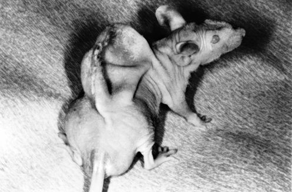
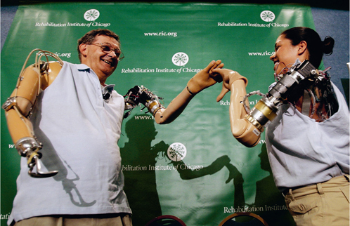

THIS BOOK BEGAN BY PRESENTING HISTORY as the next stage in the continuum of physics to chemistry to biology. Sapiens are subject to the same physical forces, chemical reactions and natural-selection processes that govern all living beings. Natural selection may have provided Homo sapiens with a much larger playing field than it has given to any other organism, but the field has still had its boundaries. The implication has been that, no matter what their efforts and achievements, Sapiens are incapable of breaking free of their biologically determined limits.
But at the dawn of the twenty-first century, this is no longer true: Homo sapiens is transcending those limits. It is now beginning to break the laws of natural selection, replacing them with the laws of intelligent design.
For close to 4 billion years, every single organism on the planet evolved subject to natural selection. Not even one was designed by an intelligent creator. The giraffe, for example, got its long neck thanks to competition between archaic giraffes rather than to the whims of a super-intelligent being. Proto-giraffes who had longer necks had access to more food and consequently produced more offspring than did those with shorter necks. Nobody, certainly not the giraffes, said, ‘A long neck would enable giraffes to munch leaves off the treetops. Let’s extend it.’ The beauty of Darwin’s theory is that it does not need to assume an intelligent designer to explain how giraffes ended up with long necks.
For billions of years, intelligent design was not even an option, because there was no intelligence which could design things. Microorganisms, which until quite recently were the only living things around, are capable of amazing feats. A microorganism belonging to one species can incorporate genetic codes from a completely different species into its cell and thereby gain new capabilities, such as resistance to antibiotics. Yet, as best we know, microorganisms have no consciousness, no aims in life, and no ability to plan ahead.
At some stage organisms such as giraffes, dolphins, chimpanzees and Neanderthals evolved consciousness and the ability to plan ahead. But even if a Neanderthal fantasised about fowls so fat and slow-moving that he could just scoop them up whenever he was hungry, he had no way of turning that fantasy into reality. He had to hunt the birds that had been naturally selected.
The first crack in the old regime appeared about 10,000 years ago, during the Agricultural Revolution. Sapiens who dreamed of fat, slow-moving chickens discovered that if they mated the fattest hen with the slowest cock, some of their offspring would be both fat and slow. If you mated those offspring with each other, you could produce a line of fat, slow birds. It was a race of chickens unknown to nature, produced by the intelligent design not of a god but of a human.
Still, compared to an all-powerful deity, Homo sapiens had limited design skills. Sapiens could use selective breeding to detour around and accelerate the natural-selection processes that normally affected chickens, but they could not introduce completely new characteristics that were absent from the genetic pool of wild chickens. In a way, the relationship between Homo sapiens and chickens was similar to many other symbiotic relationships that have so often arisen on their own in nature. Sapiens exerted peculiar selective pressures on chickens that caused the fat and slow ones to proliferate, just as pollinating bees select flowers, causing the bright colourful ones to proliferate.
Today, the 4-billion-year-old regime of natural selection is facing a completely different challenge. In laboratories throughout the world, scientists are engineering living beings. They break the laws of natural selection with impunity, unbridled even by an organisms original characteristics. Eduardo Kac, a Brazilian bio-artist, decided in 2000 to create a new work of art: a fluorescent green rabbit. Kac contacted a French laboratory and offered it a fee to engineer a radiant bunny according to his specifications. The French scientists took a run-of-the-mill white rabbit embryo, implanted in its DNA a gene taken from a green fluorescent jellyfish, and voilà! One green fluorescent rabbit for le monsieur. Kac named the rabbit Alba.
It is impossible to explain the existence of Alba through the laws of natural selection. She is the product of intelligent design. She is also a harbinger of things to come. If the potential Alba signifies is realised in full – and if humankind doesn’t annihilate itself meanwhile – the Scientific Revolution might prove itself far greater than a mere historical revolution. It may turn out to be the most important biological revolution since the appearance of life on earth. After 4 billion years of natural selection, Alba stands at the dawn of a new cosmic era, in which life will be ruled by intelligent design. If this happens, the whole of human history up to that point might, with hindsight, be reinterpreted as a process of experimentation and apprenticeship that revolutionised the game of life. Such a process should be understood from a cosmic perspective of billions of years, rather than from a human perspective of millennia.
Biologists the world over are locked in battle with the intelligent-design movement, which opposes the teaching of Darwinian evolution in schools and claims that biological complexity proves there must be a creator who thought out all biological details in advance. The biologists are right about the past, but the proponents of intelligent design might, ironically, be right about the future.
At the time of writing, the replacement of natural selection by intelligent design could happen in any of three ways: through biological engineering, cyborg engineering (cyborgs are beings that combine organic with non-organic parts) or the engineering of inorganic life.
Biological engineering is deliberate human intervention on the biological level (e.g. implanting a gene) aimed at modifying an organisms shape, capabilities, needs or desires, in order to realize some preconceived cultural idea, such as the artistic predilections of Eduardo Kac.
There is nothing new about biological engineering, per se. People have been using it for millennia in order to reshape themselves and other organisms. A simple example is castration. Humans have been castrating bulls for perhaps 10,000 years in order to create oxen. Oxen are less aggressive, and are thus easier to train to pull ploughs. Humans also castrated their own young males to create soprano singers with enchanting voices and eunuchs who could safely be entrusted with overseeing the sultans harem.
But recent advances in our understanding of how organisms work, down to the cellular and nuclear levels, have opened up previously unimaginable possibilities. For instance, we can today not merely castrate a man, but also change his sex through surgical and hormonal treatments. But that’s not all. Consider the surprise, disgust and consternation that ensued when, in 1996, the following photograph appeared in newspapers and on television:

46. A mouse on whose back scientists grew an ‘ear’ made of cattle cartilage cells. It is an eerie echo of the lion-man statue from the Stadel Cave. Thirty thousand years ago, humans were already fantasising about combining different species. Today, they can actually produce such chimeras.
No, Photoshop was not involved. It’s an untouched photo of a real mouse on whose back scientists implanted cattle cartilage cells. The scientists were able to control the growth of the new tissue, shaping it in this case into something that looks like a human ear. The process may soon enable scientists to manufacture artificial ears, which could then be implanted in humans.1
Even more remarkable wonders can be performed with genetic engineering, which is why it raises a host of ethical, political and ideological issues. And it’s not just pious monotheists who object that man should not usurp God’s role. Many confirmed atheists are no less shocked by the idea that scientists are stepping into nature’s shoes. Animal-rights activists decry the suffering caused to lab animals in genetic engineering experiments, and to the farmyard animals that are engineered in complete disregard of their needs and desires. Human-rights activists are afraid that genetic engineering might be used to create supermen who will make serfs of the rest of us. Jeremiahs offer apocalyptic visions of bio-dictatorships that will clone fearless soldiers and obedient workers. The prevailing feeling is that too many opportunities are opening too quickly and that our ability to modify genes is outpacing our capacity for making wise and far-sighted use of the skill.
The result is that we’re at present using only a fraction of the potential of genetic engineering. Most of the organisms now being engineered are those with the weakest political lobbies – plants, fungi, bacteria and insects. For example, lines of E. coli, a bacterium that lives symbiotically in the human gut (and which makes headlines when it gets out of the gut and causes deadly infections), have been genetically engineered to produce biofuel.2 E. coli and several species of fungi have also been engineered to produce insulin, thereby lowering the cost of diabetes treatment.3 A gene extracted from an Arctic fish has been inserted into potatoes, making the plants more frost-resistant.4
A few mammals have also been subject to genetic engineering. Every year the dairy industry suffers billions of dollars in damages due to mastitis, a disease that strikes dairy-cow udders. Scientists are currently experimenting with genetically engineered cows whose milk contains lysostaphin, a biochemical that attacks the bacteria responsible for the disease.5 The pork industry, which has suffered from falling sales because consumers are wary of the unhealthy fats in ham and bacon, has hopes for a still-experimental line of pigs implanted with genetic material from a worm. The new genes cause the pigs to turn bad omega 6 fatty acid into its healthy cousin, omega 3.6
The next generation of genetic engineering will make pigs with good fat look like child’s play. Geneticists have managed not merely to extend sixfold the average life expectancy of worms, but also to engineer genius mice that display much-improved memory and learning skills.7 Voles are small, stout rodents resembling mice, and most varieties of voles are promiscuous. But there is one species in which boy and girl voles form lasting and monogamous relationships. Geneticists claim to have isolated the genes responsible for vole monogamy. If the addition of a gene can turn a vole Don Juan into a loyal and loving husband, are we far off from being able to genetically engineer not only the individual abilities of rodents (and humans), but also their social structures?8
But geneticists do not only want to transform living lineages. They aim to revive extinct creatures as well. And not just dinosaurs, as in Jurassic Park. A team of Russian, Japanese and Korean scientists has recently mapped the genome of ancient mammoths, found frozen in the Siberian ice. They now plan to take a fertilised egg-cell of a present-day elephant, replace the elephantine DNA with a reconstructed mammoth DNA, and implant the egg in the womb of an elephant. After about twenty-two months, they expect the first mammoth in 5,000 years to be born.9
But why stop at mammoths? Professor George Church of Harvard University recently suggested that, with the completion of the Neanderthal Genome Project, we can now implant reconstructed Neanderthal DNA into a Sapiens ovum, thus producing the first Neanderthal child in 30,000 years. Church claimed that he could do the job for a paltry $30 million. Several women have already volunteered to serve as surrogate mothers.10
What do we need Neanderthals for? Some argue that if we could study live Neanderthals, we could answer some of the most nagging questions about the origins and uniqueness of Homo sapiens. By comparing a Neanderthal to a Homo sapiens brain, and mapping out where their structures differ, perhaps we could identify what biological change produced consciousness as we experience it. There’s an ethical reason, too – some have argued that if Homo sapiens was responsible for the extinction of the Neanderthals, it has a moral duty to resurrect them. And having some Neanderthals around might be useful. Lots of industrialists would be glad to pay one Neanderthal to do the menial work of two Sapiens.
But why stop even at Neanderthals? Why not go back to God’s drawing board and design a better Sapiens? The abilities, needs and desires of Homo sapiens have a genetic basis, and the Sapiens genome is no more complex than that of voles and mice. (The mouse genome contains about 2.5 billion nucleobases, the Sapiens genome about 2.9 billion bases – meaning the latter is only 14 per cent larger.)11 In the medium range – perhaps in a few decades – genetic engineering and other forms of biological engineering might enable us to make far-reaching alterations not only to our physiology, immune system and life expectancy, but also to our intellectual and emotional capacities. If genetic engineering can create genius mice, why not genius humans? If it can create monogamous voles, why not humans hard-wired to remain faithful to their partners?
The Cognitive Revolution that turned Homo sapiens from an insignificant ape into the master of the world did not require any noticeable change in physiology or even in the size and external shape of the Sapiens brain. It apparently involved no more than a few small changes to internal brain structure. Perhaps another small change would be enough to ignite a Second Cognitive Revolution, create a completely new type of consciousness, and transform Homo sapiens into something altogether different.
True, we still don’t have the acumen to achieve this, but there seems to be no insurmountable technical barrier preventing us from producing superhumans. The main obstacles are the ethical and political objections that have slowed down research on humans. And no matter how convincing the ethical arguments may be, it is hard to see how they can hold back the next step for long, especially if what is at stake is the possibility of prolonging human life indefinitely, conquering incurable diseases, and upgrading our cognitive and emotional abilities.
What would happen, for example, if we developed a cure for Alzheimer’s disease that, as a side benefit, could dramatically improve the memories of healthy people? Would anyone be able to halt the relevant research? And when the cure is developed, could any law enforcement agency limit it to Alzheimer’s patients and prevent healthy people from using it to acquire super-memories?
It’s unclear whether bioengineering could really resurrect the Neanderthals, but it would very likely bring down the curtain on Homo sapiens. Tinkering with our genes won’t necessarily kill us. But we might fiddle with Homo sapiens to such an extent that we would no longer be Homo sapiens.
There is another new technology which could change the laws of life: cyborg engineering. Cyborgs are beings which combine organic and inorganic parts, such as a human with bionic hands. In a sense, nearly all of us are bionic these days, since our natural senses and functions are supplemented by devices such as eyeglasses, pacemakers, orthotics, and even computers and mobile phones (which relieve our brains of some of their data storage and processing burdens). We stand poised on the brink of becoming true cyborgs, of having inorganic features that are inseparable from our bodies, features that modify our abilities, desires, personalities and identities.
The Defense Advanced Research Projects Agency (DARPA), a US military research agency, is developing cyborgs out of insects. The idea is to implant electronic chips, detectors and processors in the body of a fly or cockroach, which will enable either a human or an automatic operator to control the insect’s movements remotely and to absorb and transmit information. Such a fly could be sitting on the wall at enemy headquarters, eavesdrop on the most secret conversations, and if it isn’t caught first by a spider, could inform us exactly what the enemy is planning.12 In 2006 the US Naval Undersea Warfare Center reported its intention to develop cyborg sharks, declaring, ‘NUWC is developing a fish tag whose goal is behaviour control of host animals via neural implants.’ The developers hope to identify underwater electromagnetic fields made by submarines and mines, by exploiting the natural magnetic detecting capabilities of sharks, which are superior to those of any man-made detectors.13
Sapiens, too, are being turned into cyborgs. The newest generation of hearing aids are sometimes referred to as ‘bionic ears’. The device consists of an implant that absorbs sound through a microphone located in the outer part of the ear. The implant filters the sounds, identifies human voices, and translates them into electric signals that are sent directly to the central auditory nerve and from there to the brain.14
Retina Implant, a government-sponsored German company, is developing a retinal prosthesis that may allow blind people to gain partial vision. It involves implanting a small microchip inside the patient’s eye. Photocells absorb light falling on the eye and transform it into electrical energy, which stimulates the intact nerve cells in the retina. The nervous impulses from these cells stimulate the brain, where they are translated into sight. At present the technology allows patients to orientate themselves in space, identify letters, and even recognise faces.15
Jesse Sullivan, an American electrician, lost both arms up to the shoulder in a 2001 accident. Today he uses two bionic arms, courtesy of the Rehabilitation Institute of Chicago. The special feature of Jesse’s new arms is that they are operated by thought alone. Neural signals arriving from Jesse’s brain are translated by micro-computers into electrical commands, and the arms move. When Jesse wants to raise his arm, he does what any normal person unconsciously does – and the arm rises. These arms can perform a much more limited range of movements than organic arms, but they enable Jesse to carry out simple daily functions. A similar bionic arm has recently been outfitted for Claudia Mitchell, an American soldier who lost her arm in a motorcycle accident. Scientists believe that we will soon have bionic arms that will not only move when willed to move, but will also be able to transmit signals back to the brain, thereby enabling amputees to regain even the sensation of touch!16

47. Jesse Sullivan and Claudia Mitchell holding hands. The amazing thing about their bionic arms is that they are operated by thought.
At present these bionic arms are a poor replacement for our organic originals, but they have the potential for unlimited development. Bionic arms, for example, can be made far more powerful than their organic kin, making even a boxing champion feel like a weakling. Moreover, bionic arms have the advantage that they can be replaced every few years, or detached from the body and operated at a distance.
Scientists at Duke University in North Carolina have recently demonstrated this with rhesus monkeys whose brains have been implanted with electrodes. The electrodes gather signals from the brain and transmit them to external devices. The monkeys have been trained to control detached bionic arms and legs through thought alone. One monkey, named Aurora, learned to thought-control a detached bionic arm while simultaneously moving her two organic arms. Like some Hindu goddess, Aurora now has three arms, and her arms can be located in different rooms – or even cities. She can sit in her North Carolina lab, scratch her back with one hand, scratch her head with a second hand, and simultaneously steal a banana in New York (although the ability to eat a purloined fruit at a distance remains a dream). Another rhesus monkey, Idoya, won world fame in 2008 when she thought-controlled a pair of bionic legs in Kyoto, Japan, from her North Carolina chair. The legs were twenty times Idoya’s weight.17
Locked-in syndrome is a condition in which a person loses all or nearly all her ability to move any part of her body, while her cognitive abilities remain intact. Patients suffering from the syndrome have up till now been able to communicate with the outside world only through small eye movements. However, a few patients have had brain-signal-gathering electrodes implanted in their brains. Efforts are being made to translate such signals not merely into movements but also into words. If the experiments succeed, locked-in patients could finally speak directly with the outside world, and we might eventually be able to use the technology to read other peoples minds.18
Yet of all the projects currently under development, the most revolutionary is the attempt to devise a direct two-way brain-computer interface that will allow computers to read the electrical signals of a human brain, simultaneously transmitting signals that the brain can read in turn. What if such interfaces are used to directly link a brain to the Internet, or to directly link several brains to each other, thereby creating a sort of Inter-brain-net? What might happen to human memory, human consciousness and human identity if the brain has direct access to a collective memory bank? In such a situation, one cyborg could, for example, retrieve the memories of another – not hear about them, not read about them in an autobiography, not imagine them, but directly remember them as if they were his own. Or her own. What happens to concepts such as the self and gender identity when minds become collective? How could you know thyself or follow your dream if the dream is not in your mind but in some collective reservoir of aspirations?
Such a cyborg would no longer be human, or even organic. It would be something completely different. It would be so fundamentally another kind of being that we cannot even grasp the philosophical, psychological or political implications.
The third way to change the laws of life is to engineer completely inorganic beings. The most obvious examples are computer programs and computer viruses that can undergo independent evolution.
The field of genetic programming is today one of the most interesting spots in the computer science world. It tries to emulate the methods of genetic evolution. Many programmers dream of creating a program that could learn and evolve completely independently of its creator. In this case, the programmer would be a primum mobile, a first mover, but his creation would be free to evolve in directions neither its maker nor any other human could ever have envisaged.
A prototype for such a program already exists – it’s called a computer virus. As it spreads through the Internet, the virus replicates itself millions upon millions of times, all the while being chased by predatory antivirus programs and competing with other viruses for a place in cyberspace. One day when the virus replicates itself a mistake occurs – a computerised mutation. Perhaps the mutation occurs because the human engineer programmed the virus to make occasional random replication mistakes. Perhaps the mutation was due to a random error. If, by chance, the modified virus is better at evading antivirus programs without losing its ability to invade other computers, it will spread through cyberspace. If so, the mutants will survive and reproduce. As time goes by, cyberspace would be full of new viruses that nobody engineered, and that undergo non-organic evolution.
Are these living creatures? It depends on what you mean by ‘living creatures’. They have certainly been produced by a new evolutionary process, completely independent of the laws and limitations of organic evolution.
Imagine another possibility – suppose you could back up your brain to a portable hard drive and then run it on your laptop. Would your laptop be able to think and feel just like a Sapiens? If so, would it be you or someone else? What if computer programmers could create an entirely new but digital mind, composed of computer code, complete with a sense of self, consciousness and memory? If you ran the program on your computer, would it be a person? If you deleted it could you be charged with murder?
We might soon have the answer to such questions. The Human Brain Project, founded in 2005, hopes to recreate a complete human brain inside a computer, with electronic circuits in the computer emulating neural networks in the brain. The projects director has claimed that, if funded properly, within a decade or two we could have an artificial human brain inside a computer that could talk and behave very much as a human does. If successful, that would mean that after 4 billion years of milling around inside the small world of organic compounds, life will suddenly break out into the vastness of the inorganic realm, ready to take up shapes beyond our wildest dreams. Not all scholars agree that the mind works in a manner analogous to today’s digital computers – and if it doesn’t, present-day computers would not be able to simulate it. Yet it would be foolish to categorically dismiss the possibility before giving it a try. In 2013 the project received a grant of €1 billion from the European Union.19
Presently, only a tiny fraction of these new opportunities have been realised. Yet the world of 2014 is already a world in which culture is releasing itself from the shackles of biology. Our ability to engineer not merely the world around us, but above all the world inside our bodies and minds, is developing at breakneck speed. More and more spheres of activity are being shaken out of their complacent ways. Lawyers need to rethink issues of privacy and identity; governments are faced with rethinking matters of health care and equality; sports associations and educational institutions need to redefine fair play and achievement; pension funds and labour markets should readjust to a world in which sixty might be the new thirty. They must all deal with the conundrums of bioengineering, cyborgs and inorganic life.
Mapping the first human genome required fifteen years and $3 billion. Today you can map a person’s DNA within a few weeks and at the cost of a few hundred dollars.20 The era of personalized medicine – medicine that matches treatment to DNA – has begun. The family doctor could soon tell you with greater certainty that you face high risks of liver cancer, whereas you needn’t worry too much about heart attacks. She could determine that a popular medication that helps 92 per cent of people is useless to you, and you should instead take another pill, fatal to many people but just right for you. The road to near-perfect medicine stands before us.
However, with improvements in medical knowledge will come new ethical conundrums. Ethicists and legal experts are already wrestling with the thorny issue of privacy as it relates to DNA. Would insurance companies be entitled to ask for our DNA scans and to raise premiums if they discover a genetic tendency to reckless behaviour? Would we be required to fax our DNA, rather than our CV, to potential employers? Could an employer favour a candidate because his DNA looks better? Or could we sue in such cases for ‘genetic discrimination’? Could a company that develops a new creature or a new organ register a patent on its DNA sequences? It is obvious that one can own a particular chicken, but can one own an entire species?
Such dilemmas are dwarfed by the ethical, social and political implications of the Gilgamesh Project and of our potential new abilities to create superhumans. The Universal Declaration of Human Rights, government medical programmes throughout the world, national health insurance programmes and national constitutions worldwide recognise that a humane society ought to give all its members fair medical treatment and keep them in relatively good health. That was all well and good as long as medicine was chiefly concerned with preventing illness and healing the sick. What might happen once medicine becomes preoccupied with enhancing human abilities? Would all humans be entitled to such enhanced abilities, or would there be a new superhuman elite?
Our late modern world prides itself on recognising, for the first time in history, the basic equality of all humans, yet it might be poised to create the most unequal of all societies. Throughout history, the upper classes always claimed to be smarter, stronger and generally better than the underclass. They were usually deluding themselves. A baby born to a poor peasant family was likely to be as intelligent as the crown prince. With the help of new medical capabilities, the pretensions of the upper classes might soon become an objective reality.
This is not science fiction. Most science-fiction plots describe a world in which Sapiens – identical to us – enjoy superior technology such as light-speed spaceships and laser guns. The ethical and political dilemmas central to these plots are taken from our own world, and they merely recreate our emotional and social tensions against a futuristic backdrop. Yet the real potential of future technologies is to change Homo sapiens itself, including our emotions and desires, and not merely our vehicles and weapons. What is a spaceship compared to an eternally young cyborg who does not breed and has no sexuality, who can share thoughts directly with other beings, whose abilities to focus and remember are a thousand times greater than our own, and who is never angry or sad, but has emotions and desires that we cannot begin to imagine?
Science fiction rarely describes such a future, because an accurate description is by definition incomprehensible. Producing a film about the life of some super-cyborg is akin to producing Hamlet for an audience of Neanderthals. Indeed, the future masters of the world will probably be more different from us than we are from Neanderthals. Whereas we and the Neanderthals are at least human, our inheritors will be godlike.
Physicists define the Big Bang as a singularity. It is a point at which all the known laws of nature did not exist. Time too did not exist. It is thus meaningless to say that anything existed ‘before’ the Big Bang. We may be fast approaching a new singularity, when all the concepts that give meaning to our world – me, you, men, women, love and hate – will become irrelevant. Anything happening beyond that point is meaningless to us.
In 1818 Mary Shelley published Frankenstein, the story of a scientist who creates an artificial being that goes out of control and wreaks havoc. In the last two centuries, the same story has been told over and over again in countless versions. It has become a central pillar of our new scientific mythology. At first sight, the Frankenstein story appears to warn us that if we try to play God and engineer life we will be punished severely. Yet the story has a deeper meaning.
The Frankenstein myth confronts Homo sapiens with the fact that the last days are fast approaching. Unless some nuclear or ecological catastrophe intervenes, so goes the story, the pace of technological development will soon lead to the replacement of Homo sapiens by completely different beings who possess not only different physiques, but also very different cognitive and emotional worlds. This is something most Sapiens find extremely disconcerting. We like to believe that in the future people just like us will travel from planet to planet in fast spaceships. We don’t like to contemplate the possibility that in the future, beings with emotions and identities like ours will no longer exist, and our place will be taken by alien life forms whose abilities dwarf our own.
We somehow find comfort in the idea that Dr Frankenstein created a terrible monster, whom we had to destroy in order to save ourselves. We like to tell the story that way because it implies that we are the best of all beings, that there never was and never will be something better than us. Any attempt to improve us will inevitably fail, because even if our bodies might be improved, you cannot touch the human spirit.
We would have a hard time swallowing the fact that scientists could engineer spirits as well as bodies, and that future Dr Frankensteins could therefore create something truly superior to us, something that will look at us as condescendingly as we look at the Neanderthals.
We cannot be certain whether today’s Frankensteins will indeed fulfil this prophecy. The future is unknown, and it would be surprising if the forecasts of the last few pages were realised in full. History teaches us that what seems to be just around the corner may never materialise due to unforeseen barriers, and that other unimagined scenarios will in fact come to pass. When the nuclear age erupted in the 1940S, many forecasts were made about the future nuclear world of the year 2000. When sputnik and Apollo 11 fired the imagination of the world, everyone began predicting that by the end of the century, people would be living in space colonies on Mars and Pluto. Few of these forecasts came true. On the other hand, nobody foresaw the Internet.
So don’t go out just yet to buy liability insurance to indemnify you against lawsuits filed by digital beings. The above fantasies – or nightmares – are just stimulants for your imagination. What we should take seriously is the idea that the next stage of history will include not only technological and organisational transformations, but also fundamental transformations in human consciousness and identity. And these could be transformations so fundamental that they will call the very term ‘human’ into question. How long do we have? No one really knows. As already mentioned, some say that by 2050 a few humans will already be a-mortal. Less radical forecasts speak of the next century, or the next millennium. Yet from the perspective of 70,000 years of Sapiens history, what are a few millennia?
If the curtain is indeed about to drop on Sapiens history, we members of one of its final generations should devote some time to answering one last question: what do we want to become? This question, sometimes known as the Human Enhancement question, dwarfs the debates that currently preoccupy politicians, philosophers, scholars and ordinary people. After all, today’s debate between today’s religions, ideologies, nations and classes will in all likelihood disappear along with Homo sapiens. If our successors indeed function on a different level of consciousness (or perhaps possess something beyond consciousness that we cannot even conceive), it seems doubtful that Christianity or Islam will be of interest to them, that their social organisation could be Communist or capitalist, or that their genders could be male or female.
And yet the great debates of history are important because at least the first generation of these gods would be shaped by the cultural ideas of their human designers. Would they be created in the image of capitalism, of Islam, or of feminism? The answer to this question might send them careening in entirely different directions.
Most people prefer not to think about it. Even the field of bioethics prefers to address another question, ‘What is it forbidden to do?’ Is it acceptable to carry out genetic experiments on living human beings? On aborted fetuses? On stem cells? Is it ethical to clone sheep? And chimpanzees? And what about humans? All of these are important questions, but it is naïve to imagine that we might simply hit the brakes and stop the scientific projects that are upgrading Homo sapiens into a different kind of being. For these projects are inextricably meshed together with the Gilgamesh Project. Ask scientists why they study the genome, or try to connect a brain to a computer, or try to create a mind inside a computer. Nine out of ten times you’ll get the same standard answer: we are doing it to cure diseases and save human lives. Even though the implications of creating a mind inside a computer are far more dramatic than curing psychiatric illnesses, this is the standard justification given, because nobody can argue with it. This is why the Gilgamesh Project is the flagship of science. It serves to justify everything science does. Dr Frankenstein piggybacks on the shoulders of Gilgamesh. Since it is impossible to stop Gilgamesh, it is also impossible to stop Dr Frankenstein.
The only thing we can try to do is to influence the direction scientists are taking. Since we might soon be able to engineer our desires too, perhaps the real question facing us is not ‘What do we want to become?’, but ‘What do we want to want?’ Those who are not spooked by this question probably haven’t given it enough thought.